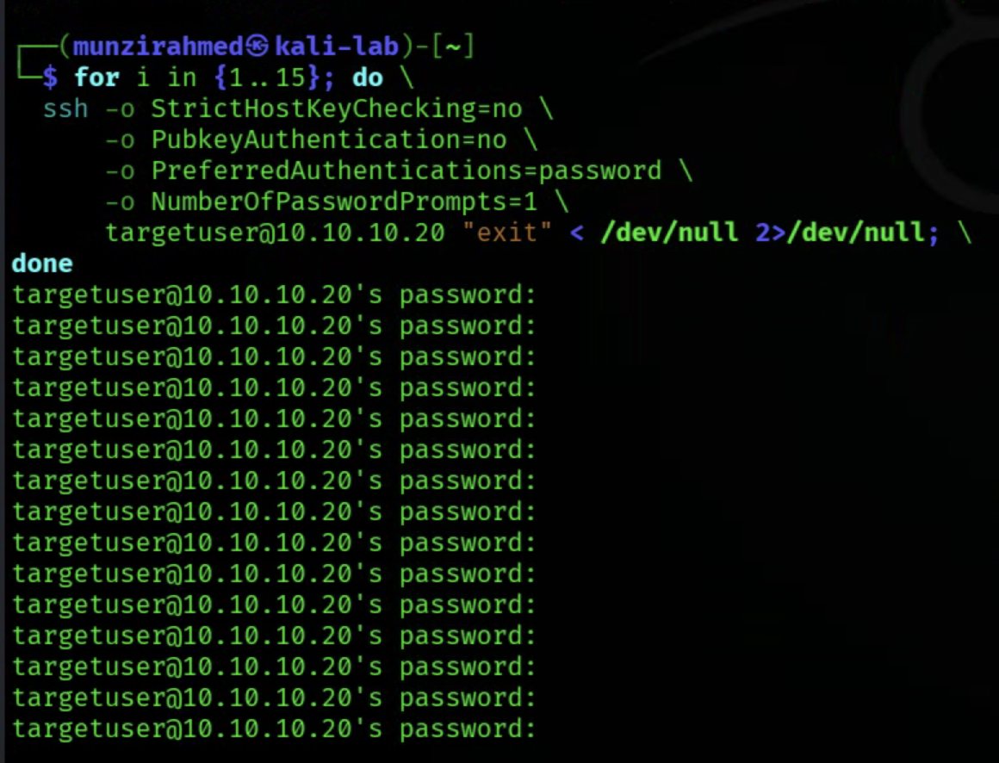
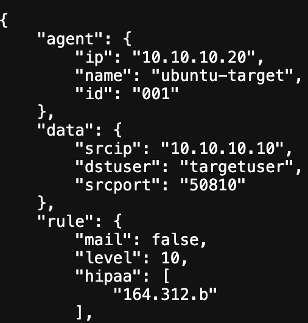
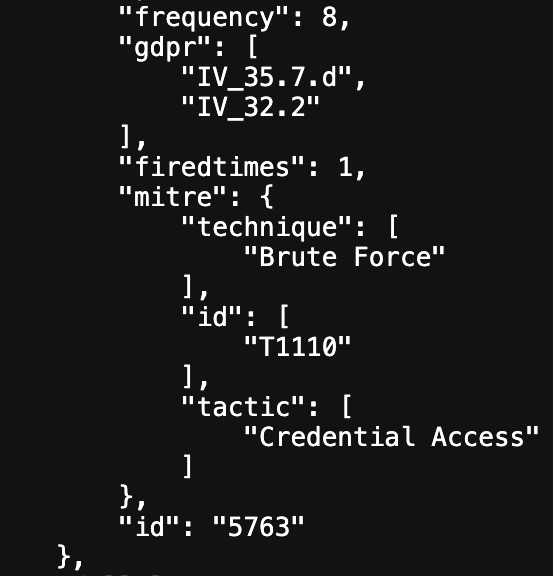
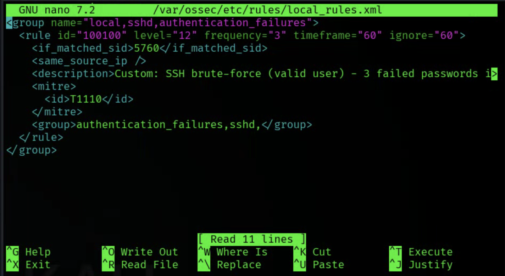
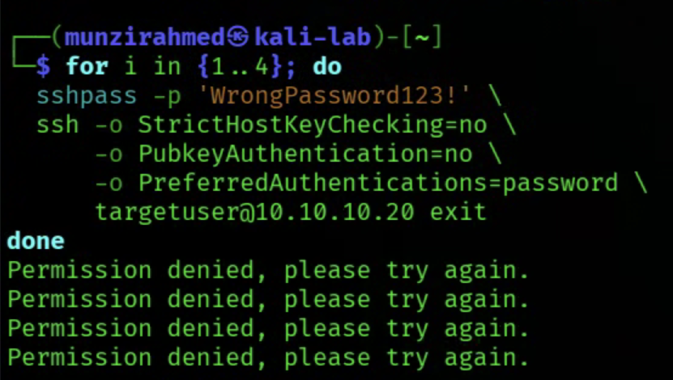
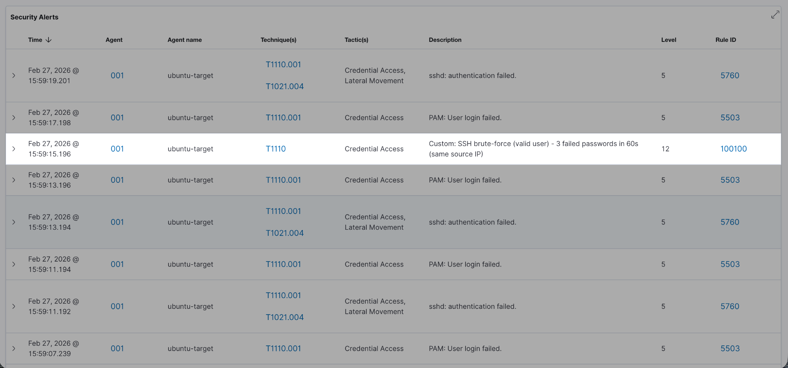
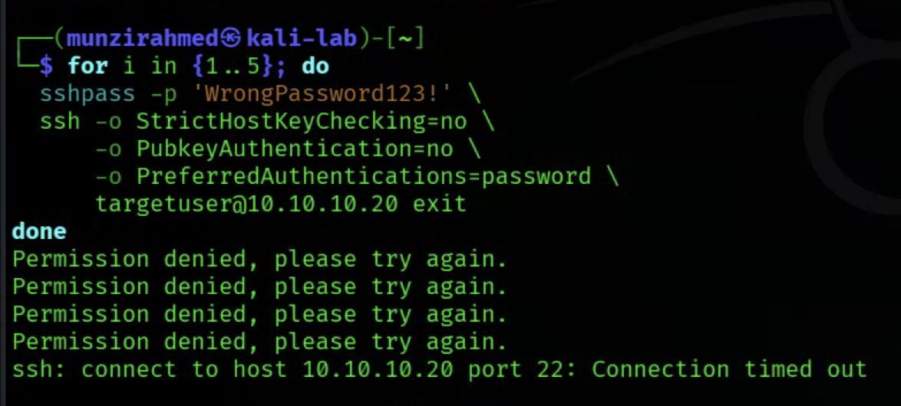
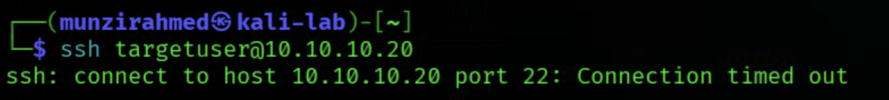

Automated SSH Brute-Force Detection &
Response
Pipeline
with Wazuh
In this project, I simulated an SSH brute force attack from Kali Linux against a target Ubuntu machine and monitored it using Wazuh. The goal was not just to detect failed logins, but to understand how correlation works, how alerts escalate, and how a SIEM can move from passive monitoring to active containment.
Part 1: Infrastructure & SIEM Deployment
The first step in this project was building a controlled lab environment where I could safely
simulate
attacks and analyse the defensive response. I used Proxmox to create a three virtual machine setup
on an
isolated internal network. The internal bridge was configured as
The three machines had clearly defined roles. Kali Linux at
Wazuh was installed on the SIEM machine as both the manager and the dashboard component. This
allowed it
to collect logs, apply detection rules, and visualise alerts through a web interface. The Ubuntu
target
machine was configured as a Wazuh agent and registered with the manager. Once the agent was
connected
and active, I verified that logs from the target, particularly the authentication log, were being
ingested correctly into the SIEM.
By the end of this stage, I had a functioning SIEM environment capable of ingesting logs from a
monitored endpoint in a segmented lab. The infrastructure was stable, isolated, and ready for
controlled attack simulation in the next phase of the project.
Part 2: SSH Brute Force Detection & Rule Analysis
With the infrastructure in place, the next step was to simulate an attack and understand how Wazuh
detects and escalates suspicious behaviour. I chose to focus on SSH brute force attempts because
they are common, easy to simulate in a controlled lab, and clearly visible in authentication
logs.
Using Kali Linux as the attacker machine, I generated repeated failed SSH login attempts against the
Ubuntu target system. Each failed login attempt was recorded in the target’s authentication log,
which was already being monitored by the Wazuh agent. This allowed me to observe how raw log data
moves from the endpoint into the SIEM and becomes structured alerts in the dashboard.

Initially, each failed login triggered lower level alerts tied to default Wazuh rules related to SSH authentication failures. By analysing these alerts, I identified the rule hierarchy responsible for detection. Individual failed attempts were logged under basic authentication failure rules. After a certain number of repeated failures within a defined timeframe, in this case 8, Wazuh escalated the event to a brute force detection rule. This correlation behaviour showed how Wazuh aggregates multiple related events rather than treating them in isolation.I also examined the JSON structure of the generated alerts to better understand the data available for analysis.


Key fields such as source IP, destination user, frequency count, and previous log entries were included. This made it clear how Wazuh determines patterns like repeated attempts from the same source IP. I reviewed the associated MITRE ATT and CK mappings as well, which linked the activity to Credential Access and brute force techniques. This reinforced how detection engineering can align with recognised attack frameworks.
Part 3: Custom Escalation Logic & Troubleshooting
After validating that the default SSH brute force rules were working, I wanted more control over how
quickly an alert escalated and what severity it reached. Instead of relying entirely on the built in
thresholds, I created a custom rule with ID 100100 that would fire sooner and at a higher confidence
level.
I configured the rule so that after three failed authentication attempts from the same source IP
within a defined timeframe, a level 12 alert would be triggered. This meant I was intentionally
lowering the threshold to detect suspicious behaviour earlier while still using correlation logic to
avoid false positives from a single mistyped password. The rule was chained using

Once implemented, I tested the logic by generating repeated SSH login attempts from Kali against the Ubuntu target. After the third attempt, the custom rule successfully fired at level 12 in the dashboard. I reviewed the alert output to confirm that critical fields such as source IP, destination user, and frequency were being captured correctly. Seeing the escalation occur exactly at the defined threshold confirmed that the detection logic was functioning as designed.

This phase also involved substantial troubleshooting. XML formatting errors initially caused the Wazuh manager to fail to restart due to configuration parsing issues. I had to correct misplaced tags and ensure proper structure within the configuration file. I validated the XML before restarting services to prevent repeated failures. Debugging these errors reinforced how precise SIEM configuration must be and how small syntax mistakes can prevent an entire detection engine from loading.Part 4: Automated Containment with Active Response
With detection and escalation working as intended, the final step was to move from passive
monitoring to automated containment. The objective was simple: once the custom level 12 rule fired
after three failed SSH attempts, the system should automatically block the attacker’s IP address on
the target machine.
To achieve this, I configured an active response using the firewall-drop command within Wazuh. The
command was set to expect the source IP field so that the attacker’s address would be dynamically
passed to the firewall script. I then linked this response to my custom rule 100100, targeting the
specific agent representing the Ubuntu target machine. This ensured that when the rule triggered,
the response would execute directly on the compromised host.
<command> <name>firewall-drop</name> <executable>firewall-drop</executable> <expect>srcip</expect> <timeout_allowed>yes</timeout_allowed> </command>
<active-response> <command>firewall-drop</command> <location>defined-agent</location> <agent_id>001</agent_id> <rules_id>100100</rules_id> <timeout>600</timeout> </active-response>
I also configured a timeout of 600 seconds so the block would be temporary rather than permanent.
This mirrors how many production environments handle containment, isolating suspicious activity
while allowing automatic recovery if the threat subsides. After restarting the manager and
confirming that the configuration loaded correctly, I simulated another brute force attempt from
Kali.

Once the third failed login occurred, the level 12 alert appeared in the dashboard as expected. Immediately after, the firewall-drop script executed on the target machine. I confirmed this by reviewing the active responses log, which showed the add command being processed for the attacker IP. When attempting to SSH again from Kali, the connection hung and eventually timed out, demonstrating that the DROP rule was functioning correctly.
After approximately ten minutes, the log showed the delete action, and SSH connectivity was restored automatically.This phase demonstrated a complete defensive lifecycle. The system detected suspicious behaviour, escalated it according to a defined threshold, executed automated containment, and later restored normal access without manual intervention. The project had now progressed from log collection to engineered detection and finally to automated response, replicating a core responsibility of a real world security operations workflow.
This project allowed me to design and implement a defensive pipeline rather than just
observe
alerts. Starting from infrastructure setup, I moved through detection, custom rule escalation, and
finally automated containment using active response. By simulating real attack behaviour and
validating
each stage of the response, I was able to move from theory into hands on security
engineering.
The end result was a working system that detects repeated SSH login attempts, escalates them at a
defined threshold, automatically blocks the attacker’s IP, and restores access after a controlled
timeout. More than anything, this project helped me understand how detection logic, correlation, and
response mechanisms work together in a real world SOC environment.